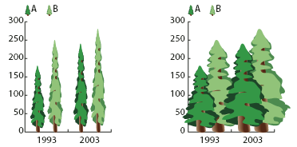
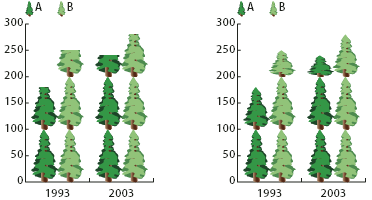
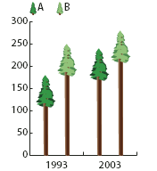

About graph designs
You use graph designs to add illustrations to columns and markers. Graph designs can be simple drawings, logos, or other symbols representing values in a graph; they can also be complex objects that contain patterns and guide objects. Illustrator comes with a variety of preset graph designs. In addition, you can create new graph designs and store them in the Graph Design dialog box.
You can apply graph design to columns in several ways:
- Vertically scaled design
- Is stretched or compressed vertically. Its width does not change.
- Uniformly scaled design
-
Is scaled both vertically and horizontally. The horizontal
spacing of the designs is not adjusted for the different widths.

Vertically scaled graph design compared to uniformly scaled graph design
- Repeating design
-
Stacks a design to fill the columns. You can specify the
value that each design represents, as well as whether you want to
chop or scale designs that represent fractions.

Repeating graph with chopped design compared to repeating graph with scaled design
- Sliding design
-
Is similar to a vertically scaled design, except that you
can specify where in the design to stretch or compress it. For example,
if you were using a person to represent data, you might stretch
or compress only the body, but not the head. Using the Vertically
Scaled option would scale the entire person.

Sliding graph design